Analisis Time Series, Ekstraksi Fitur, PCA, dan K-Means Clustering#
Proyek Sains Data (PSD)
Polutan: CO, NO₂, SO₂
Wilayah salah satu anggota: Kecamatan Menganti, Kabupaten Gresik
Dataset kelas: hasil ekstraksi TSFEL dari seluruh mahasiswa
Catatan ruang lingkup#
Instruksi kerja yang sedang digunakan menyatakan bahwa ekstraksi dilakukan untuk 3 polutan sekaligus:
CO → 68 fitur
NO₂ → 68 fitur
SO₂ → 68 fitur
Total dataset utama untuk clustering:
68 × 3 = 204 fitur per mahasiswa.
# 1. Import library
import numpy as np
import pandas as pd
import matplotlib.pyplot as plt
from sklearn.preprocessing import StandardScaler
from sklearn.decomposition import PCA
from sklearn.cluster import KMeans
from sklearn.metrics import (
silhouette_score,
davies_bouldin_score,
calinski_harabasz_score
)
from pathlib import Path
pd.set_option("display.max_columns", 100)
pd.set_option("display.float_format", lambda x: f"{x:.6g}")
2. Dataset#
Dataset Kelas#
Dataset berikut merupakan hasil ekstraksi fitur TSFEL dari seluruh anggota kelas. Setiap polutan memiliki 68 fitur.
Data Time Series Kecamatan Menganti#
Data berikut merupakan data time series hasil crawling Sentinel-5P untuk Kecamatan Menganti, Kabupaten Gresik.
Data Hasil Preprocessing#
Data berikut merupakan hasil preprocessing sebelum dilakukan ekstraksi fitur TSFEL.
# 3. Konfigurasi path
BASE = Path("..")
CLASS_DIR = BASE / "data" / "class"
PROCESSED_DIR = BASE / "data" / "processed"
FEATURE_DIR = BASE / "data" / "features"
NO2_CLASS = CLASS_DIR / "ekstraksi_fitur_no2.csv"
CO_CLASS = CLASS_DIR / "ekstraksi_fitur_co.csv"
SO2_CLASS = CLASS_DIR / "ekstraksi_fitur_so2.csv"
NO2_TS = PROCESSED_DIR / "menganti_NO2_preprocessed.csv"
CO_TS = PROCESSED_DIR / "menganti_CO_preprocessed.csv"
SO2_TS = PROCESSED_DIR / "menganti_SO2_preprocessed.csv"
print("CLASS_DIR :", CLASS_DIR)
print("PROCESSED_DIR:", PROCESSED_DIR)
print("FEATURE_DIR :", FEATURE_DIR)
CLASS_DIR : ..\data\class
PROCESSED_DIR: ..\data\processed
FEATURE_DIR : ..\data\features
4. EDA — Time Series CO, NO₂, dan SO₂#
Setiap polutan dibuat sebagai time series. Data yang digunakan untuk visualisasi berasal dari hasil preprocessing sehingga tidak memiliki missing value.
# 4.1 Membaca time series
ts_no2 = pd.read_csv(NO2_TS, parse_dates=["date"])
ts_co = pd.read_csv(CO_TS, parse_dates=["date"])
ts_so2 = pd.read_csv(SO2_TS, parse_dates=["date"])
print("NO2:", ts_no2.shape, "missing =", ts_no2["NO2"].isna().sum())
print("CO :", ts_co.shape, "missing =", ts_co["CO"].isna().sum())
print("SO2:", ts_so2.shape, "missing =", ts_so2["SO2"].isna().sum())
NO2: (366, 2) missing = 0
CO : (366, 2) missing = 0
SO2: (366, 2) missing = 0
# 4.2 Plot time series NO2
plt.figure(figsize=(14, 5))
plt.plot(ts_no2["date"], ts_no2["NO2"])
plt.title("Time Series NO₂ — Kecamatan Menganti")
plt.xlabel("Tanggal")
plt.ylabel("NO₂")
plt.grid(True)
plt.show()
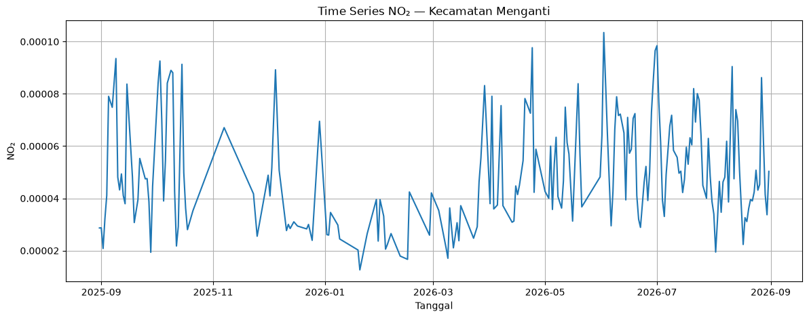
# 4.3 Plot time series CO
plt.figure(figsize=(14, 5))
plt.plot(ts_co["date"], ts_co["CO"])
plt.title("Time Series CO — Kecamatan Menganti")
plt.xlabel("Tanggal")
plt.ylabel("CO")
plt.grid(True)
plt.show()
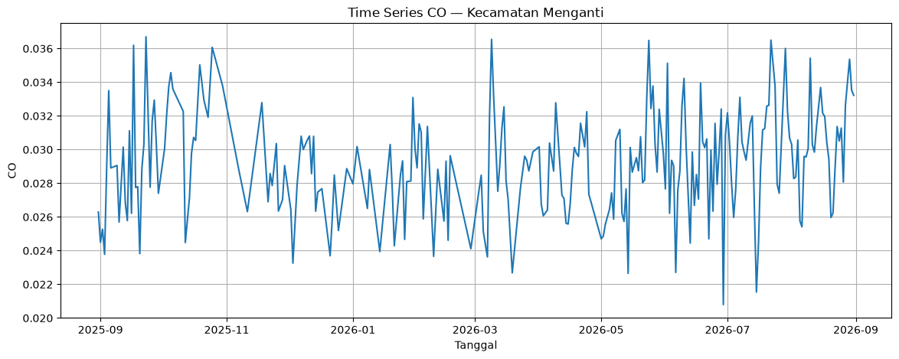
# 4.4 Plot time series SO2
plt.figure(figsize=(14, 5))
plt.plot(ts_so2["date"], ts_so2["SO2"])
plt.title("Time Series SO₂ — Kecamatan Menganti")
plt.xlabel("Tanggal")
plt.ylabel("SO₂")
plt.grid(True)
plt.show()
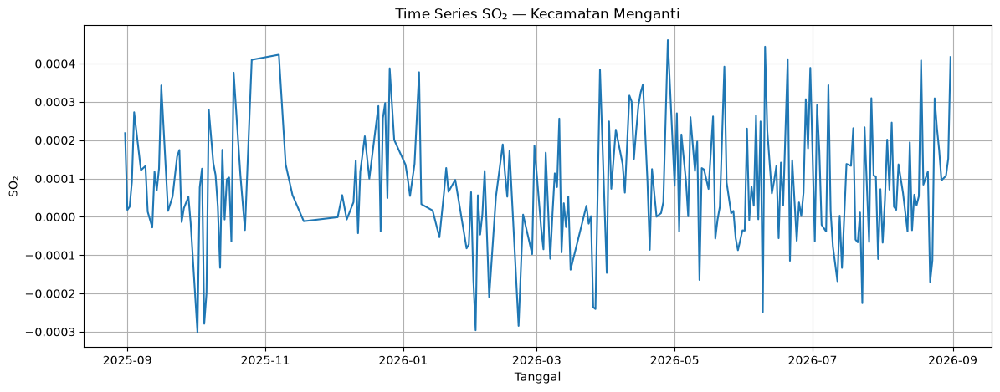
5. Konsep statistik dasar#
Statistik deskriptif yang digunakan untuk membaca karakteristik data antara lain:
Mean: rata-rata aritmetika
Median: nilai tengah setelah data diurutkan
Minimum / maksimum: nilai ekstrem bawah dan atas
Range: selisih maksimum dan minimum
Variance: ukuran penyebaran kuadrat terhadap mean
Standard deviation: akar dari variance
Quartile / IQR: ukuran sebaran bagian tengah data
Skewness: kemiringan distribusi
Kurtosis: keruncingan distribusi
Perhitungan manual di bawah menggunakan contoh kecil agar langkah matematis mudah diperiksa.
# 5.1 Contoh hitungan manual statistik
x = np.array([2, 4, 5, 4, 9])
n = len(x)
mean_manual = np.sum(x) / n
x_sorted = np.sort(x)
median_manual = x_sorted[n // 2]
variance_population_manual = np.sum((x - mean_manual) ** 2) / n
std_population_manual = np.sqrt(variance_population_manual)
range_manual = np.max(x) - np.min(x)
print("Data :", x.tolist())
print("Mean :", mean_manual)
print("Median :", median_manual)
print("Range :", range_manual)
print("Variance populasi :", variance_population_manual)
print("Std populasi :", std_population_manual)
Data : [2, 4, 5, 4, 9]
Mean : 4.8
Median : 4
Range : 7
Variance populasi : 5.36
Std populasi : 2.3151673805580453
Contoh Perhitungan Manual — Mean#
Untuk data:
Rumus mean:
Substitusi data:
Jadi, mean = 4.8.
6. Fitur TSFEL#
TSFEL menghasilkan fitur yang dikelompokkan ke domain statistik, temporal, dan spectral. Dokumen contoh TSFEL yang digunakan dalam proyek ini membahas 68 fitur dan memberikan rumus serta contoh manual untuk masing-masing fitur.
Untuk tugas individual, fitur yang dibagikan adalah:
Hurst Exponent#
Hurst Exponent digunakan untuk menggambarkan karakter dependensi/persistensi suatu deret waktu. Penjelasan rumus dan metode manual harus disesuaikan dengan metode yang digunakan oleh TSFEL pada versi environment proyek.
Verifikasi: nilai manual dan nilai TSFEL dibandingkan pada data yang sama.
Bagian ini akan diisi setelah kita cek implementasi
hurst_exponentyang tepat pada versi TSFEL di environment proyek, sehingga rumus manual tidak berbeda dengan fungsi yang benar-benar dipanggil.
# 6.1 Verifikasi Hurst Exponent dengan TSFEL
import inspect
import tsfel.feature_extraction.features as tsfel_features
print(inspect.signature(tsfel_features.hurst_exponent))
print(inspect.getsource(tsfel_features.hurst_exponent))
(signal)
@set_domain("domain", "fractal")
def hurst_exponent(signal):
"""Computes the Hurst exponent of the signal through the Rescaled range
(R/S) analysis.
Parameters
----------
signal : np.ndarray
Input signal.
Returns
-------
h_exp : float
Hurst exponent.
"""
global warning_flag
if np.var(signal) == 0 and np.all(signal == signal[0]):
return np.nan
n = len(signal)
if n < FEATURES_MIN_SIZE:
if not warning_flag:
warnings.warn(warning_msg, UserWarning)
warning_flag = True
return np.nan
lags = set(np.linspace(4, n // 10, n // 2, dtype=int))
rs = [compute_rs(signal, lag) for lag in lags]
n_values = np.array(list(lags))[np.isfinite(rs)]
rs = np.array(rs)[np.isfinite(rs)]
coeffs = np.polyfit(np.log10(n_values), np.log10(rs), 1)
h_exp = coeffs[0]
return h_exp
7. Membaca data hasil ekstraksi seluruh kelas#
Setiap file mempunyai identitas:
idnamadaerah
serta 68 fitur TSFEL.
Dataset utama 204 fitur akan dibuat dengan menggabungkan ketiga polutan berdasarkan identitas mahasiswa.
# 7.1 Load tiga file kelas
df_no2 = pd.read_csv(NO2_CLASS)
df_co = pd.read_csv(CO_CLASS)
df_so2 = pd.read_csv(SO2_CLASS)
print("NO2:", df_no2.shape)
print("CO :", df_co.shape)
print("SO2:", df_so2.shape)
print("\nKolom identitas:")
print(df_no2[["id", "nama", "daerah"]].head())
NO2: (37, 71)
CO : (37, 71)
SO2: (37, 71)
Kolom identitas:
id nama daerah
0 7 Okan Syailendra wahyudi Manyar
1 10 Triswanti Jannatul Ma'wa Kedungpring Lamongan
2 12 Laila Maghfiroh Kamal, Bangkalan
3 13 Dedy Nurohim sambeng lamongan
4 14 Ahmad Syahrul Farihin Gresik Kota, Gresik
# 7.2 Validasi identitas mahasiswa
keys = ["id", "nama", "daerah"]
def normalize_name(series):
return (
series
.astype(str)
.str.strip()
# Menyamakan spasi setelah tanda titik
.str.replace(r"\.\s*", ". ", regex=True)
# Menyamakan spasi berlebih
.str.replace(r"\s+", " ", regex=True)
# Menyamakan huruf besar/kecil
.str.casefold()
)
df_no2["nama_key"] = normalize_name(df_no2["nama"])
df_co["nama_key"] = normalize_name(df_co["nama"])
df_so2["nama_key"] = normalize_name(df_so2["nama"])
nama_no2 = set(df_no2["nama_key"])
nama_co = set(df_co["nama_key"])
nama_so2 = set(df_so2["nama_key"])
print("Jumlah nama NO2 :", len(nama_no2))
print("Jumlah nama CO :", len(nama_co))
print("Jumlah nama SO2 :", len(nama_so2))
print("Nama sama NO2-CO :", len(nama_no2 & nama_co))
print("Nama sama NO2-SO2:", len(nama_no2 & nama_so2))
print("Nama sama CO-SO2 :", len(nama_co & nama_so2))
print("Nama sama ketiganya:", len(nama_no2 & nama_co & nama_so2))
Jumlah nama NO2 : 37
Jumlah nama CO : 37
Jumlah nama SO2 : 37
Nama sama NO2-CO : 37
Nama sama NO2-SO2: 37
Nama sama CO-SO2 : 37
Nama sama ketiganya: 37
# 7.3 Menggabungkan menjadi 204 fitur
def prepare_pollutant(df, prefix):
df = df.copy()
# 68 fitur tidak termasuk kolom identitas
feature_cols = [
c for c in df.columns
if c not in keys + ["nama_key"]
]
# Pastikan jumlah fitur benar
assert len(feature_cols) == 68, (
f"{prefix} memiliki {len(feature_cols)} fitur, bukan 68"
)
result = df[["nama_key"] + feature_cols].copy()
# Tambahkan prefix berdasarkan polutan
result = result.rename(
columns={
c: f"{prefix}_{c}"
for c in feature_cols
}
)
return result
# Siapkan masing-masing polutan
no2_features = prepare_pollutant(df_no2, "NO2")
co_features = prepare_pollutant(df_co, "CO")
so2_features = prepare_pollutant(df_so2, "SO2")
# Gabungkan berdasarkan nama mahasiswa
merged_features = (
no2_features
.merge(co_features, on="nama_key", how="inner", validate="one_to_one")
.merge(so2_features, on="nama_key", how="inner", validate="one_to_one")
)
# Simpan identitas mahasiswa dari dataset NO2
identity = df_no2[["id", "nama", "daerah", "nama_key"]].copy()
# Gabungkan identitas dengan 204 fitur
df_204 = identity.merge(
merged_features,
on="nama_key",
how="inner",
validate="one_to_one"
)
# Ambil hanya 204 kolom fitur
feature_cols_204 = [
c for c in df_204.columns
if c not in keys + ["nama_key"]
]
print("Shape dataset 204 fitur:", df_204.shape)
print("Jumlah fitur:", len(feature_cols_204))
print("Jumlah mahasiswa:", len(df_204))
print(
"Missing:",
df_204[feature_cols_204].isna().sum().sum()
)
display(
df_204[
["id", "nama", "daerah"] + feature_cols_204[:5]
].head()
)
Shape dataset 204 fitur: (37, 208)
Jumlah fitur: 204
Jumlah mahasiswa: 37
Missing: 0
| id | nama | daerah | NO2_abs_energy | NO2_auc | NO2_autocorr | NO2_average_power | NO2_calc_centroid | |
|---|---|---|---|---|---|---|---|---|
| 0 | 7 | Okan Syailendra wahyudi | Manyar | 1.93304e-06 | 0.0239898 | 7 | 5.31055e-09 | 186.075 |
| 1 | 10 | Triswanti Jannatul Ma'wa | Kedungpring Lamongan | 3.70206e-07 | 0.0109051 | 8 | 1.01426e-09 | 194.285 |
| 2 | 12 | Laila Maghfiroh | Kamal, Bangkalan | 7.36359e-07 | 0.015059 | 11 | 2.01742e-09 | 166.04 |
| 3 | 13 | Dedy Nurohim | sambeng lamongan | 3.85402e-07 | 0.0112284 | 6 | 1.0559e-09 | 196.839 |
| 4 | 14 | Ahmad Syahrul Farihin | Gresik Kota, Gresik | 1.52398e-06 | 0.0224174 | 3 | 4.17529e-09 | 184.04 |
8. Standardisasi Fitur#
K-Means menggunakan jarak terhadap centroid. Karena 204 fitur memiliki skala yang berbeda, fitur distandardisasi menggunakan Z-score melalui StandardScaler.
Rumus standardisasi:
dengan:
\(x\) = nilai asli suatu fitur
\(\mu\) = rata-rata fitur
\(\sigma\) = standar deviasi fitur
\(z\) = nilai fitur setelah standardisasi
Setelah standardisasi, setiap fitur berada pada skala yang sebanding sehingga tidak ada fitur dengan skala lebih besar yang mendominasi perhitungan jarak pada K-Means.
scaler_204 = StandardScaler()
X_204 = df_204[feature_cols_204].astype(float)
X_204_scaled = scaler_204.fit_transform(X_204)
print("Shape:", X_204_scaled.shape)
print("Mean mendekati 0:", np.mean(X_204_scaled, axis=0).mean())
print("Std rata-rata mendekati 1:", np.std(X_204_scaled, axis=0).mean())
Shape: (37, 204)
Mean mendekati 0: -6.385424495361987e-16
Std rata-rata mendekati 1: 0.9656862745098039
9. PCA 1–37#
Kualitas clustering dibandingkan pada jumlah komponen PCA dari 1 sampai 37.
Untuk setiap jumlah komponen:
transformasi PCA
cari kandidat K dengan Elbow
evaluasi K-Means
simpan metrik clustering
# 9.1 PCA 1 sampai 37 — tabel explained variance
max_components = min(37, X_204_scaled.shape[0], X_204_scaled.shape[1])
pca_full = PCA(n_components=max_components)
X_pca_full = pca_full.fit_transform(X_204_scaled)
explained = pd.DataFrame({
"PC": np.arange(1, max_components + 1),
"explained_variance_ratio": pca_full.explained_variance_ratio_,
"cumulative_explained_variance": np.cumsum(pca_full.explained_variance_ratio_)
})
display(explained)
| PC | explained_variance_ratio | cumulative_explained_variance | |
|---|---|---|---|
| 0 | 1 | 0.49939 | 0.49939 |
| 1 | 2 | 0.162095 | 0.661485 |
| 2 | 3 | 0.0987362 | 0.760222 |
| 3 | 4 | 0.0387984 | 0.79902 |
| 4 | 5 | 0.0361934 | 0.835213 |
| 5 | 6 | 0.0246921 | 0.859905 |
| 6 | 7 | 0.01836 | 0.878265 |
| 7 | 8 | 0.0162693 | 0.894535 |
| 8 | 9 | 0.0133907 | 0.907925 |
| 9 | 10 | 0.0113529 | 0.919278 |
| 10 | 11 | 0.0108002 | 0.930079 |
| 11 | 12 | 0.00922194 | 0.939301 |
| 12 | 13 | 0.00776623 | 0.947067 |
| 13 | 14 | 0.00628298 | 0.95335 |
| 14 | 15 | 0.00547822 | 0.958828 |
| 15 | 16 | 0.00512693 | 0.963955 |
| 16 | 17 | 0.0049461 | 0.968901 |
| 17 | 18 | 0.00418528 | 0.973086 |
| 18 | 19 | 0.00367457 | 0.976761 |
| 19 | 20 | 0.00325142 | 0.980012 |
| 20 | 21 | 0.00297079 | 0.982983 |
| 21 | 22 | 0.002738 | 0.985721 |
| 22 | 23 | 0.00232325 | 0.988044 |
| 23 | 24 | 0.00183091 | 0.989875 |
| 24 | 25 | 0.00153643 | 0.991412 |
| 25 | 26 | 0.00137424 | 0.992786 |
| 26 | 27 | 0.00131844 | 0.994104 |
| 27 | 28 | 0.00119649 | 0.995301 |
| 28 | 29 | 0.000929647 | 0.996231 |
| 29 | 30 | 0.000824363 | 0.997055 |
| 30 | 31 | 0.000661421 | 0.997716 |
| 31 | 32 | 0.000645622 | 0.998362 |
| 32 | 33 | 0.000526108 | 0.998888 |
| 33 | 34 | 0.000427776 | 0.999316 |
| 34 | 35 | 0.000359128 | 0.999675 |
| 35 | 36 | 0.000325071 | 1 |
| 36 | 37 | 9.84874e-32 | 1 |
# 9.2 Fungsi evaluasi K-Means untuk suatu jumlah PCA
def evaluate_kmeans(X, k_min=2, k_max=10, random_state=42):
rows = []
upper_k = min(k_max, len(X) - 1)
for k in range(k_min, upper_k + 1):
model = KMeans(
n_clusters=k,
random_state=random_state,
n_init=10
)
labels = model.fit_predict(X)
rows.append({
"K": k,
"inertia": model.inertia_,
"silhouette": silhouette_score(X, labels),
"davies_bouldin": davies_bouldin_score(X, labels),
"calinski_harabasz": calinski_harabasz_score(X, labels)
})
return pd.DataFrame(rows)
# 9.3 Evaluasi K-Means untuk PCA 1 sampai 37
from sklearn.cluster import KMeans
from sklearn.metrics import (
silhouette_score,
davies_bouldin_score,
calinski_harabasz_score
)
pca_kmeans_results = []
for n_pc in range(1, 38):
# Ambil PCA sebanyak n_pc
X_pc = X_pca_full[:, :n_pc]
for k in range(2, 11):
kmeans = KMeans(
n_clusters=k,
random_state=42,
n_init=10
)
labels = kmeans.fit_predict(X_pc)
silhouette = silhouette_score(X_pc, labels)
davies_bouldin = davies_bouldin_score(X_pc, labels)
calinski_harabasz = calinski_harabasz_score(X_pc, labels)
pca_kmeans_results.append({
"n_pca": n_pc,
"K": k,
"inertia": kmeans.inertia_,
"silhouette": silhouette,
"davies_bouldin": davies_bouldin,
"calinski_harabasz": calinski_harabasz
})
# Ubah menjadi DataFrame
pca_kmeans_results = pd.DataFrame(pca_kmeans_results)
display(pca_kmeans_results.head())
| n_pca | K | inertia | silhouette | davies_bouldin | calinski_harabasz | |
|---|---|---|---|---|---|---|
| 0 | 1 | 2 | 14.2702 | 0.962142 | 0.00726805 | 8892.81 |
| 1 | 1 | 3 | 6.51715 | 0.564662 | 0.385158 | 9478.09 |
| 2 | 1 | 4 | 3.67796 | 0.462341 | 0.479034 | 10875.6 |
| 3 | 1 | 5 | 2.11951 | 0.525928 | 0.341405 | 13731.3 |
| 4 | 1 | 6 | 0.968146 | 0.518547 | 0.348476 | 23304.7 |
Cara membaca metrik#
Inertia: semakin kecil, jarak dalam cluster semakin kecil; digunakan terutama untuk Elbow Method.
Silhouette Score: semakin mendekati 1 berarti pemisahan cluster semakin jelas; nilai negatif menunjukkan banyak titik lebih dekat ke cluster lain.
Davies-Bouldin Index: semakin kecil menunjukkan cluster yang lebih kompak dan lebih terpisah.
Calinski-Harabasz Index: semakin besar menunjukkan rasio pemisahan antar-cluster terhadap penyebaran dalam-cluster yang lebih tinggi.
Tidak boleh menentukan “K terbaik” hanya dari satu angka tanpa melihat konteks metrik dan struktur cluster.
# 9.4 Pilih kandidat K berdasarkan silhouette tertinggi untuk setiap PCA
best_by_pca = (
pca_kmeans_results
.sort_values(["n_pca", "silhouette"], ascending=[True, False])
.groupby("n_pca", as_index=False)
.first()
)
display(best_by_pca)
| n_pca | K | inertia | silhouette | davies_bouldin | calinski_harabasz | |
|---|---|---|---|---|---|---|
| 0 | 1 | 2 | 14.2702 | 0.962142 | 0.00726805 | 8892.81 |
| 1 | 2 | 2 | 1194.01 | 0.905277 | 0.0449284 | 106.335 |
| 2 | 3 | 2 | 1913.62 | 0.86119 | 0.0756382 | 66.3492 |
| 3 | 4 | 2 | 2196.38 | 0.846645 | 0.0855236 | 57.808 |
| 4 | 5 | 2 | 2459.75 | 0.831192 | 0.0961745 | 51.6248 |
| 5 | 6 | 2 | 2639.72 | 0.822333 | 0.102295 | 48.1052 |
| 6 | 7 | 2 | 2773.55 | 0.814816 | 0.107709 | 45.7842 |
| 7 | 8 | 2 | 2892.12 | 0.807599 | 0.113817 | 43.9072 |
| 8 | 9 | 2 | 2989.73 | 0.803018 | 0.117219 | 42.4738 |
| 9 | 10 | 2 | 3072.47 | 0.798593 | 0.120756 | 41.3301 |
| 10 | 11 | 2 | 3151.18 | 0.794395 | 0.124018 | 40.2977 |
| 11 | 12 | 2 | 3218.4 | 0.790947 | 0.126615 | 39.4561 |
| 12 | 13 | 2 | 3275.01 | 0.787927 | 0.12898 | 38.7741 |
| 13 | 14 | 2 | 3320.81 | 0.785638 | 0.130859 | 38.2394 |
| 14 | 15 | 2 | 3360.74 | 0.783724 | 0.132296 | 37.785 |
| 15 | 16 | 2 | 3398.11 | 0.782046 | 0.133571 | 37.3695 |
| 16 | 17 | 2 | 3434.16 | 0.780442 | 0.134798 | 36.9772 |
| 17 | 18 | 2 | 3464.67 | 0.779156 | 0.135729 | 36.6516 |
| 18 | 19 | 2 | 3491.45 | 0.777975 | 0.136605 | 36.3704 |
| 19 | 20 | 2 | 3515.15 | 0.776795 | 0.137578 | 36.1252 |
| 20 | 21 | 2 | 3536.8 | 0.775807 | 0.138349 | 35.9041 |
| 21 | 22 | 2 | 3556.76 | 0.774903 | 0.139038 | 35.7026 |
| 22 | 23 | 2 | 3573.69 | 0.774188 | 0.13958 | 35.5334 |
| 23 | 24 | 2 | 3587.04 | 0.773585 | 0.140054 | 35.4012 |
| 24 | 25 | 2 | 3598.24 | 0.773083 | 0.140446 | 35.291 |
| 25 | 26 | 2 | 3608.26 | 0.772617 | 0.140815 | 35.1931 |
| 26 | 27 | 2 | 3617.87 | 0.772155 | 0.14119 | 35.0996 |
| 27 | 28 | 2 | 3626.59 | 0.771743 | 0.141519 | 35.0152 |
| 28 | 29 | 2 | 3633.36 | 0.771432 | 0.141759 | 34.9499 |
| 29 | 30 | 2 | 3639.37 | 0.771176 | 0.141955 | 34.8922 |
| 30 | 31 | 2 | 3644.19 | 0.770955 | 0.142128 | 34.846 |
| 31 | 32 | 2 | 3648.9 | 0.770742 | 0.142302 | 34.8011 |
| 32 | 33 | 2 | 3652.73 | 0.770564 | 0.142443 | 34.7645 |
| 33 | 34 | 2 | 3655.85 | 0.770423 | 0.142549 | 34.7349 |
| 34 | 35 | 2 | 3658.47 | 0.770301 | 0.14265 | 34.71 |
| 35 | 36 | 2 | 3660.84 | 0.770191 | 0.142737 | 34.6876 |
| 36 | 37 | 2 | 3660.84 | 0.770191 | 0.142737 | 34.6876 |
# 9.5 Visualisasi perubahan silhouette terhadap jumlah PCA
plt.figure(figsize=(12, 5))
plt.plot(
best_by_pca["n_pca"],
best_by_pca["silhouette"],
marker="o"
)
plt.xlabel("Jumlah Komponen PCA")
plt.ylabel("Silhouette Score")
plt.title("Kualitas Clustering terhadap Jumlah Komponen PCA")
plt.grid(True)
plt.show()
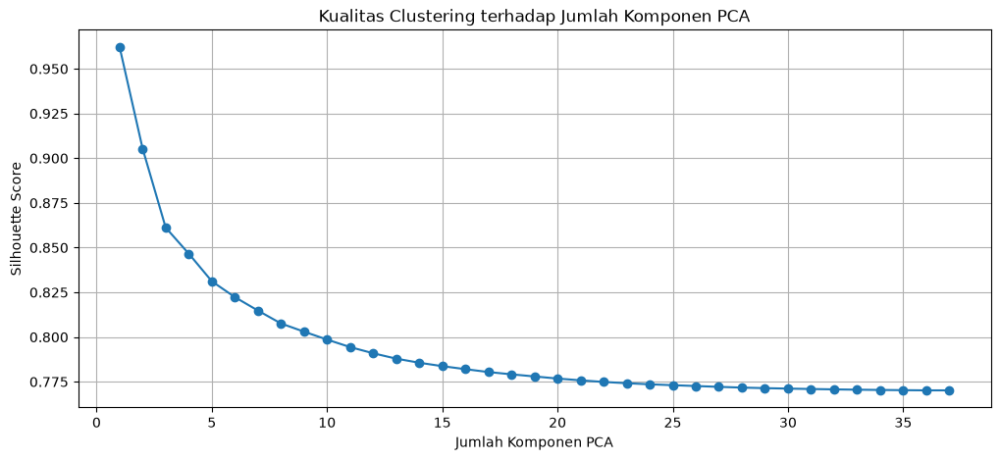
10. Menentukan K menggunakan Elbow Method#
Untuk K yang dipilih pada PCA tertentu, plot inertia untuk K=2 sampai K=10.
Pola “siku” menjadi kandidat K, kemudian diperiksa lagi menggunakan metrik evaluasi clustering.
# Contoh: gunakan jumlah PCA yang dipilih setelah melihat hasil bagian 9.
# Jangan mengisi manual sebelum tabel best_by_pca diperiksa.
candidate_pca = int(best_by_pca.loc[best_by_pca["silhouette"].idxmax(), "n_pca"])
X_candidate = X_pca_full[:, :candidate_pca]
elbow_candidate = evaluate_kmeans(X_candidate)
display(elbow_candidate)
plt.figure(figsize=(8, 5))
plt.plot(elbow_candidate["K"], elbow_candidate["inertia"], marker="o")
plt.xlabel("Jumlah Cluster (K)")
plt.ylabel("Inertia")
plt.title(f"Elbow Method — PCA {candidate_pca}")
plt.grid(True)
plt.show()
| K | inertia | silhouette | davies_bouldin | calinski_harabasz | |
|---|---|---|---|---|---|
| 0 | 2 | 14.2702 | 0.962142 | 0.00726805 | 8892.81 |
| 1 | 3 | 6.51715 | 0.564662 | 0.385158 | 9478.09 |
| 2 | 4 | 3.67796 | 0.462341 | 0.479034 | 10875.6 |
| 3 | 5 | 2.11951 | 0.525928 | 0.341405 | 13731.3 |
| 4 | 6 | 0.968146 | 0.518547 | 0.348476 | 23304.7 |
| 5 | 7 | 0.535569 | 0.516479 | 0.355973 | 33978.1 |
| 6 | 8 | 0.350444 | 0.552077 | 0.305834 | 43027.7 |
| 7 | 9 | 0.256004 | 0.550835 | 0.33663 | 49762 |
| 8 | 10 | 0.17797 | 0.53061 | 0.282831 | 61356.5 |
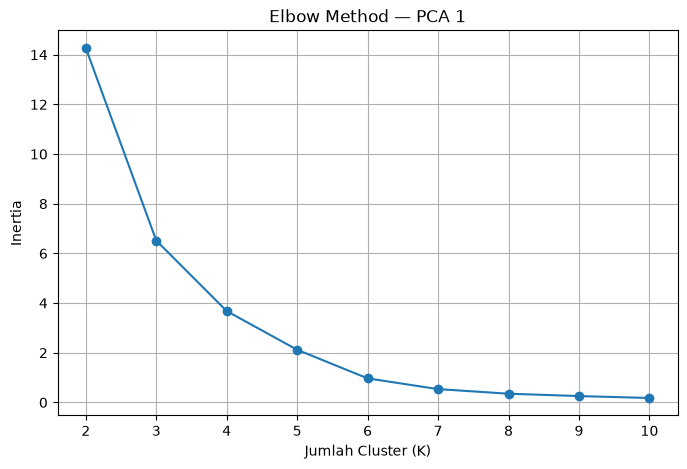
11. K-Means final pada dataset 204 fitur#
Setelah jumlah komponen PCA dan K ditentukan dari hasil evaluasi, model final dijalankan dan label cluster ditambahkan ke identitas mahasiswa.
Nilai candidate_pca dan final_k harus berasal dari hasil analisis pada bagian sebelumnya.
# Isi final_k setelah pemeriksaan Elbow + metrik.
# Contoh berikut mengambil K dengan silhouette tertinggi pada PCA kandidat.
final_k = int(
elbow_candidate.loc[elbow_candidate["silhouette"].idxmax(), "K"]
)
final_model = KMeans(
n_clusters=final_k,
random_state=42,
n_init=10
)
labels_204 = final_model.fit_predict(X_candidate)
hasil_cluster_204 = df_204[keys].copy()
hasil_cluster_204["cluster"] = labels_204
print("PCA digunakan:", candidate_pca)
print("K digunakan :", final_k)
display(hasil_cluster_204)
PCA digunakan: 1
K digunakan : 2
| id | nama | daerah | cluster | |
|---|---|---|---|---|
| 0 | 7 | Okan Syailendra wahyudi | Manyar | 0 |
| 1 | 10 | Triswanti Jannatul Ma'wa | Kedungpring Lamongan | 0 |
| 2 | 12 | Laila Maghfiroh | Kamal, Bangkalan | 0 |
| 3 | 13 | Dedy Nurohim | sambeng lamongan | 0 |
| 4 | 14 | Ahmad Syahrul Farihin | Gresik Kota, Gresik | 0 |
| 5 | 16 | Rian Renaldy | Waru, Pamekasan | 0 |
| 6 | 18 | Moh Rafie Nazar J | Bangkalan Kota,Bangkalan | 0 |
| 7 | 21 | Ainur Raftuzzaki | Nunukan | 0 |
| 8 | 25 | Muhammad Zaidan Nabil Rafi | Kamal, Bangkalan | 0 |
| 9 | 27 | Robbaniyah Umdatun Ni'mah | Cerme, Gresik | 0 |
| 10 | 30 | Magdalena Jovita Hatuopar | Pilangkenceng, Madiun | 0 |
| 11 | 31 | Alifah Sayyidaturrhohma | Kota Sumenep, Sumenep | 0 |
| 12 | 32 | Riska Nana Nuril Fadilah | Asemrowo, Surabaya | 0 |
| 13 | 33 | M. Hendrik Purwanto | Sreseh, Sampang | 0 |
| 14 | 34 | Alghifari Amar Mukhasyafah | Wonoayu | 0 |
| 15 | 41 | Muhammad izzul Millah Aqil | Wonokromo, Surabaya | 0 |
| 16 | 43 | A.Choiril Anwar El-Asfihani Risydan | Banyu Ajuh, Perumnas, Kamal | 0 |
| 17 | 44 | Verdi Setyawan Ardiansyah Putra | Menganti Gresik | 0 |
| 18 | 45 | Kurnia Maulinda Sari | Labang, Bangkalan | 0 |
| 19 | 46 | Marshella Aulia Putri | Kec. Kalianget, Sumenep | 0 |
| 20 | 47 | Rifqi Fairurrafi | Kec. Bangkalan, Kab. Bangkalan | 0 |
| 21 | 48 | Nurhabibatul Umah | Kerek, Tuban | 0 |
| 22 | 49 | Mochammad Zaenal Abidin | Widang, Tuban | 0 |
| 23 | 51 | Rachelia Andini Tendean | Tikala, Manado | 0 |
| 24 | 52 | Ahmad Dafi Zidni Alfarisi | Paciran, Lamongan | 0 |
| 25 | 53 | Deo Candra Saputra | Widodaren, Ngawi | 0 |
| 26 | 54 | Lailatul Hasanah | Socah, Bangkalan | 0 |
| 27 | 55 | Mohammad Aziz Huzaini | Tanah Merah, Bangkalan | 0 |
| 28 | 56 | Fathul Aziz Saifuddin | Dukun, Gresik | 0 |
| 29 | 57 | M. Fatihul Umam | Kwanyar, Bangkalan | 0 |
| 30 | 58 | Rahardian Ananta | jabon , Sidoarjo | 0 |
| 31 | 59 | Muhammad Ali Murtadho | Baron Nganjuk | 0 |
| 32 | 60 | Fahdimas akmal | Kwanyar, Bangkalan | 0 |
| 33 | 61 | AHMAD MAULANA ISHAQ | Kertosono, Ngajuk | 0 |
| 34 | 62 | Fathan Ruhul Alam | Warudoyong, Kota Sukabumi | 0 |
| 35 | 64 | Muhammad Isa | Bandung, Jogoroto, Jombang | 0 |
| 36 | 66 | Dewi Geizya | Kamal, Banyuajuh | 1 |
# 11.1 Evaluasi final
final_silhouette = silhouette_score(X_candidate, labels_204)
final_db = davies_bouldin_score(X_candidate, labels_204)
final_ch = calinski_harabasz_score(X_candidate, labels_204)
print("Silhouette Score :", final_silhouette)
print("Davies-Bouldin Index :", final_db)
print("Calinski-Harabasz :", final_ch)
Silhouette Score : 0.9621421712491911
Davies-Bouldin Index : 0.007268053216452457
Calinski-Harabasz : 8892.811968264623
12. Analisis 68 fitur#
Tahap ini diulang menggunakan 68 fitur dalam satu polutan, mengikuti pola pekerjaan contoh teman. Analisis dapat dilakukan terpisah untuk NO₂, CO, dan SO₂.
Untuk setiap polutan:
pilih 68 fitur
StandardScaler
PCA
Elbow Method
K-Means
Silhouette / DBI / CH
visualisasi dan profiling cluster
def run_68_feature_analysis(
df,
pollutant,
identity_cols=("id", "nama", "daerah", "nama_key")
):
identity_cols = list(identity_cols)
feature_cols = [
c for c in df.columns
if c not in identity_cols
]
# Pastikan tepat 68 fitur
assert len(feature_cols) == 68, (
f"{pollutant} memiliki {len(feature_cols)} fitur, bukan 68"
)
X = df[feature_cols].astype(float)
scaler = StandardScaler()
X_scaled = scaler.fit_transform(X)
pca = PCA(n_components=min(37, X_scaled.shape[0], X_scaled.shape[1]))
X_pca = pca.fit_transform(X_scaled)
inertia = []
K_range = range(2, 11)
for k in K_range:
kmeans_temp = KMeans(
n_clusters=k,
random_state=42,
n_init=10
)
kmeans_temp.fit(X_pca)
inertia.append(kmeans_temp.inertia_)
return {
"feature_cols": feature_cols,
"X_scaled": X_scaled,
"X_pca": X_pca,
"pca_model": pca,
"inertia": inertia,
"K_range": list(K_range)
}
# 12.1 Jalankan analisis untuk masing-masing polutan
analysis_no2 = run_68_feature_analysis(df_no2, "NO2")
analysis_co = run_68_feature_analysis(df_co, "CO")
analysis_so2 = run_68_feature_analysis(df_so2, "SO2")
print("Analisis 68 fitur selesai.")
Analisis 68 fitur selesai.
# 12.2 Plot Elbow untuk masing-masing polutan
for pollutant, result in [
("NO2", analysis_no2),
("CO", analysis_co),
("SO2", analysis_so2)
]:
plt.figure(figsize=(8, 5))
plt.plot(
result["K_range"],
result["inertia"],
marker="o"
)
plt.xlabel("Jumlah Cluster (K)")
plt.ylabel("Inertia")
plt.title(f"Elbow Method — {pollutant} (68 Fitur)")
plt.grid(True)
plt.show()
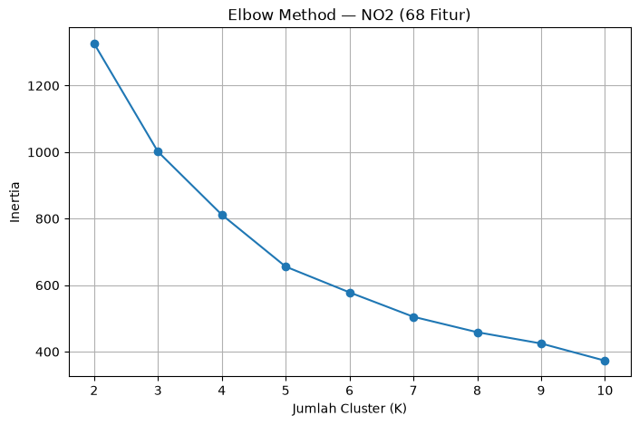
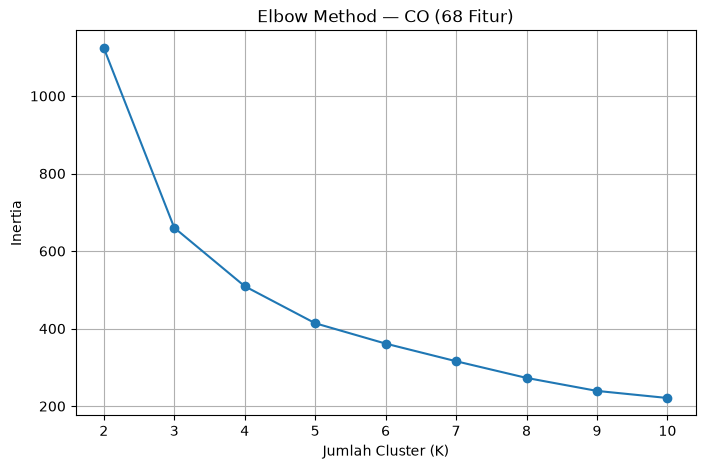
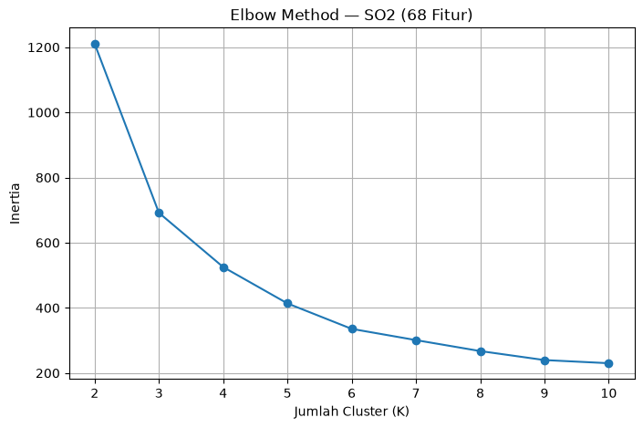
# 12.3 Evaluasi K-Means untuk masing-masing polutan — 68 fitur
def evaluate_68_features(result):
X_pca = result["X_pca"]
K_range = range(2, 11)
rows = []
for k in K_range:
model = KMeans(
n_clusters=k,
random_state=42,
n_init=10
)
labels = model.fit_predict(X_pca)
rows.append({
"K": k,
"inertia": model.inertia_,
"silhouette": silhouette_score(X_pca, labels),
"davies_bouldin": davies_bouldin_score(X_pca, labels),
"calinski_harabasz": calinski_harabasz_score(X_pca, labels)
})
return pd.DataFrame(rows)
eval_no2_68 = evaluate_68_features(analysis_no2)
eval_co_68 = evaluate_68_features(analysis_co)
eval_so2_68 = evaluate_68_features(analysis_so2)
print("=== NO2 — 68 Fitur ===")
display(eval_no2_68)
print("=== CO — 68 Fitur ===")
display(eval_co_68)
print("=== SO2 — 68 Fitur ===")
display(eval_so2_68)
=== NO2 — 68 Fitur ===
| K | inertia | silhouette | davies_bouldin | calinski_harabasz | |
|---|---|---|---|---|---|
| 0 | 2 | 1326.58 | 0.745489 | 0.163103 | 29.4289 |
| 1 | 3 | 1001.28 | 0.190722 | 1.12567 | 24.4609 |
| 2 | 4 | 811.799 | 0.20453 | 0.999696 | 22.0895 |
| 3 | 5 | 655.79 | 0.216606 | 0.846203 | 21.79 |
| 4 | 6 | 578.312 | 0.185596 | 0.94948 | 19.9803 |
| 5 | 7 | 504.99 | 0.161947 | 1.02869 | 19.1787 |
| 6 | 8 | 458.599 | 0.166889 | 0.986332 | 17.9175 |
| 7 | 9 | 424.659 | 0.151594 | 1.20074 | 16.6267 |
| 8 | 10 | 373.028 | 0.172124 | 0.867316 | 16.6393 |
=== CO — 68 Fitur ===
| K | inertia | silhouette | davies_bouldin | calinski_harabasz | |
|---|---|---|---|---|---|
| 0 | 2 | 1123.8 | 0.795494 | 0.124689 | 39.9021 |
| 1 | 3 | 660.214 | 0.697034 | 0.159113 | 44.9269 |
| 2 | 4 | 509.374 | 0.342517 | 0.694459 | 40.9363 |
| 3 | 5 | 413.89 | 0.184501 | 0.927503 | 38.4858 |
| 4 | 6 | 361.352 | 0.153812 | 0.984529 | 35.0645 |
| 5 | 7 | 315.868 | 0.161337 | 0.880005 | 33.0697 |
| 6 | 8 | 272.854 | 0.14249 | 0.841078 | 32.3733 |
| 7 | 9 | 239.323 | 0.150055 | 0.858393 | 31.6722 |
| 8 | 10 | 221.039 | 0.145469 | 0.807706 | 29.6413 |
=== SO2 — 68 Fitur ===
| K | inertia | silhouette | davies_bouldin | calinski_harabasz | |
|---|---|---|---|---|---|
| 0 | 2 | 1210.46 | 0.789366 | 0.127864 | 35.6095 |
| 1 | 3 | 691.645 | 0.708469 | 0.151285 | 43.0221 |
| 2 | 4 | 525.289 | 0.392088 | 0.533434 | 40.1376 |
| 3 | 5 | 413.679 | 0.406057 | 0.473969 | 39.2251 |
| 4 | 6 | 335.556 | 0.135855 | 0.879872 | 38.9204 |
| 5 | 7 | 301.064 | 0.126801 | 0.959841 | 35.5562 |
| 6 | 8 | 267.416 | 0.099564 | 1.00295 | 33.6891 |
| 7 | 9 | 239.818 | 0.120845 | 0.80175 | 32.1396 |
| 8 | 10 | 230.172 | 0.0924375 | 1.12546 | 28.8284 |
# 12.4 Perbandingan Silhouette Score — 68 Fitur
for pollutant, result in [
("NO2", eval_no2_68),
("CO", eval_co_68),
("SO2", eval_so2_68)
]:
plt.figure(figsize=(8, 5))
plt.plot(
result["K"],
result["silhouette"],
marker="o"
)
plt.xlabel("Jumlah Cluster (K)")
plt.ylabel("Silhouette Score")
plt.title(f"Silhouette Score — {pollutant} (68 Fitur)")
plt.grid(True)
plt.show()
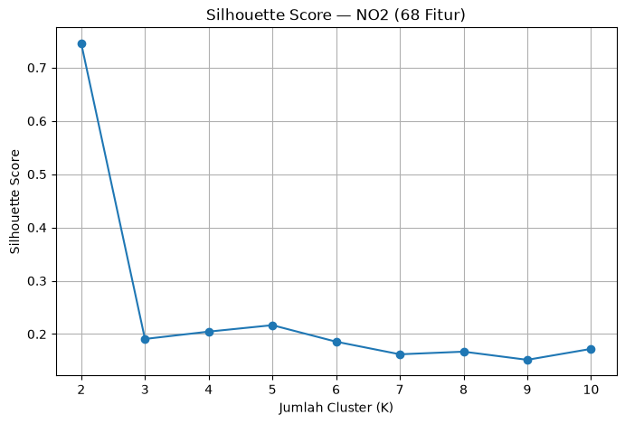
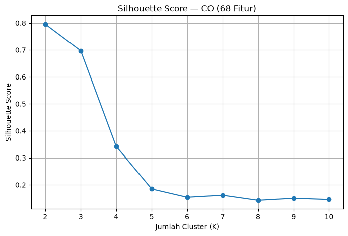
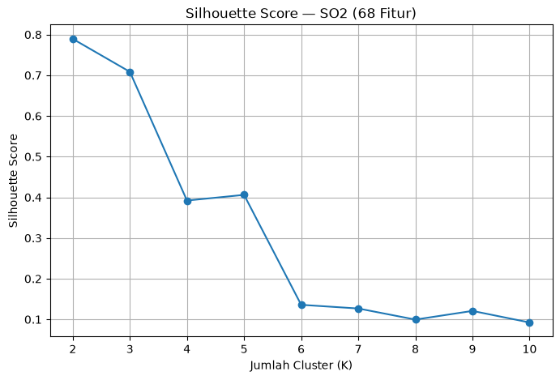
# 12.5 Davies-Bouldin Index — 68 Fitur
for pollutant, result in [
("NO2", eval_no2_68),
("CO", eval_co_68),
("SO2", eval_so2_68)
]:
plt.figure(figsize=(8, 5))
plt.plot(
result["K"],
result["davies_bouldin"],
marker="o"
)
plt.xlabel("Jumlah Cluster (K)")
plt.ylabel("Davies-Bouldin Index")
plt.title(f"Davies-Bouldin Index — {pollutant} (68 Fitur)")
plt.grid(True)
plt.show()
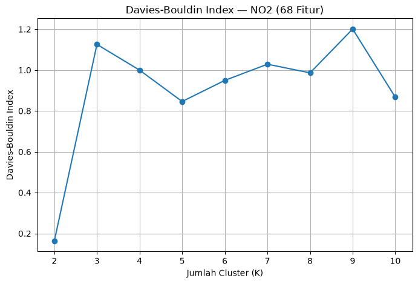
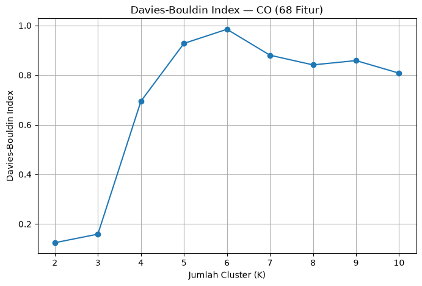
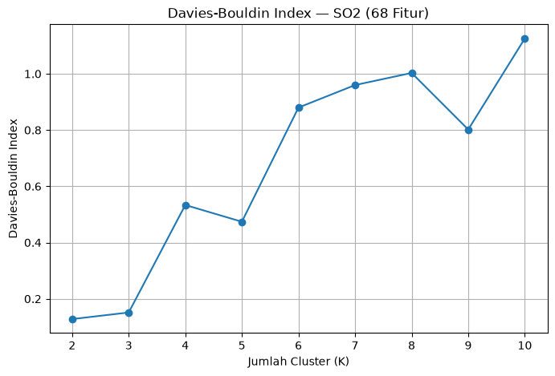
# 12.6 Calinski-Harabasz — 68 Fitur
for pollutant, result in [
("NO2", eval_no2_68),
("CO", eval_co_68),
("SO2", eval_so2_68)
]:
plt.figure(figsize=(8, 5))
plt.plot(
result["K"],
result["calinski_harabasz"],
marker="o"
)
plt.xlabel("Jumlah Cluster (K)")
plt.ylabel("Calinski-Harabasz")
plt.title(f"Calinski-Harabasz — {pollutant} (68 Fitur)")
plt.grid(True)
plt.show()
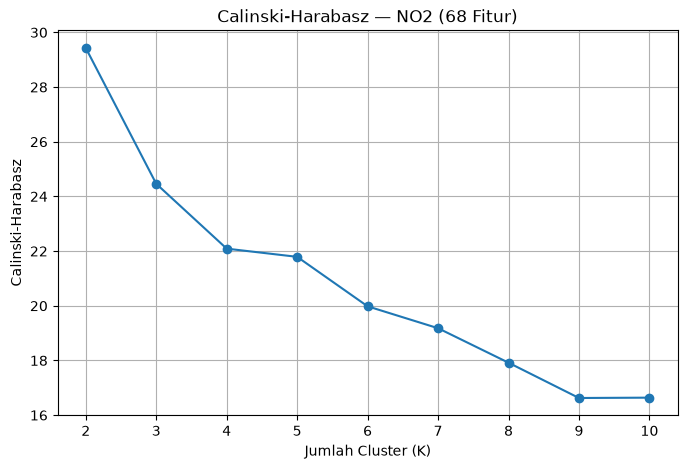
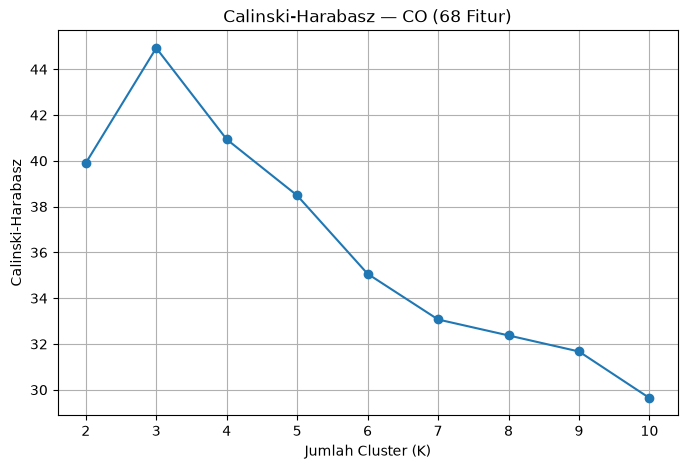
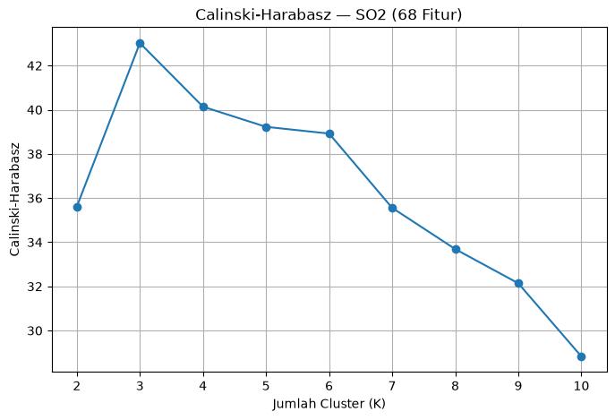
# 12.7 Kandidat K terbaik berdasarkan Silhouette
best_68 = pd.DataFrame([
{
"pollutant": "NO2",
"K_silhouette": eval_no2_68.loc[
eval_no2_68["silhouette"].idxmax(), "K"
],
"silhouette": eval_no2_68["silhouette"].max(),
"K_davies_bouldin": eval_no2_68.loc[
eval_no2_68["davies_bouldin"].idxmin(), "K"
],
"davies_bouldin": eval_no2_68["davies_bouldin"].min(),
"K_calinski_harabasz": eval_no2_68.loc[
eval_no2_68["calinski_harabasz"].idxmax(), "K"
],
"calinski_harabasz": eval_no2_68["calinski_harabasz"].max()
},
{
"pollutant": "CO",
"K_silhouette": eval_co_68.loc[
eval_co_68["silhouette"].idxmax(), "K"
],
"silhouette": eval_co_68["silhouette"].max(),
"K_davies_bouldin": eval_co_68.loc[
eval_co_68["davies_bouldin"].idxmin(), "K"
],
"davies_bouldin": eval_co_68["davies_bouldin"].min(),
"K_calinski_harabasz": eval_co_68.loc[
eval_co_68["calinski_harabasz"].idxmax(), "K"
],
"calinski_harabasz": eval_co_68["calinski_harabasz"].max()
},
{
"pollutant": "SO2",
"K_silhouette": eval_so2_68.loc[
eval_so2_68["silhouette"].idxmax(), "K"
],
"silhouette": eval_so2_68["silhouette"].max(),
"K_davies_bouldin": eval_so2_68.loc[
eval_so2_68["davies_bouldin"].idxmin(), "K"
],
"davies_bouldin": eval_so2_68["davies_bouldin"].min(),
"K_calinski_harabasz": eval_so2_68.loc[
eval_so2_68["calinski_harabasz"].idxmax(), "K"
],
"calinski_harabasz": eval_so2_68["calinski_harabasz"].max()
}
])
display(best_68)
| pollutant | K_silhouette | silhouette | K_davies_bouldin | davies_bouldin | K_calinski_harabasz | calinski_harabasz | |
|---|---|---|---|---|---|---|---|
| 0 | NO2 | 2 | 0.745489 | 2 | 0.163103 | 2 | 29.4289 |
| 1 | CO | 2 | 0.795494 | 2 | 0.124689 | 3 | 44.9269 |
| 2 | SO2 | 2 | 0.789366 | 2 | 0.127864 | 3 | 43.0221 |
# 12.8 Clustering final 68 fitur
final_k_no2 = int(
eval_no2_68.loc[eval_no2_68["silhouette"].idxmax(), "K"]
)
final_k_co = int(
eval_co_68.loc[eval_co_68["silhouette"].idxmax(), "K"]
)
final_k_so2 = int(
eval_so2_68.loc[eval_so2_68["silhouette"].idxmax(), "K"]
)
kmeans_no2 = KMeans(
n_clusters=final_k_no2,
random_state=42,
n_init=10
)
kmeans_co = KMeans(
n_clusters=final_k_co,
random_state=42,
n_init=10
)
kmeans_so2 = KMeans(
n_clusters=final_k_so2,
random_state=42,
n_init=10
)
labels_no2 = kmeans_no2.fit_predict(analysis_no2["X_pca"])
labels_co = kmeans_co.fit_predict(analysis_co["X_pca"])
labels_so2 = kmeans_so2.fit_predict(analysis_so2["X_pca"])
hasil_no2_68 = df_no2[["id", "nama", "daerah"]].copy()
hasil_no2_68["cluster"] = labels_no2
hasil_co_68 = df_co[["id", "nama", "daerah"]].copy()
hasil_co_68["cluster"] = labels_co
hasil_so2_68 = df_so2[["id", "nama", "daerah"]].copy()
hasil_so2_68["cluster"] = labels_so2
print("K NO2:", final_k_no2)
print("K CO :", final_k_co)
print("K SO2:", final_k_so2)
K NO2: 2
K CO : 2
K SO2: 2
# 12.9 Distribusi anggota cluster
print("=== Distribusi Cluster NO2 ===")
print(hasil_no2_68["cluster"].value_counts().sort_index())
print("\n=== Distribusi Cluster CO ===")
print(hasil_co_68["cluster"].value_counts().sort_index())
print("\n=== Distribusi Cluster SO2 ===")
print(hasil_so2_68["cluster"].value_counts().sort_index())
=== Distribusi Cluster NO2 ===
cluster
0 36
1 1
Name: count, dtype: int64
=== Distribusi Cluster CO ===
cluster
0 36
1 1
Name: count, dtype: int64
=== Distribusi Cluster SO2 ===
cluster
0 36
1 1
Name: count, dtype: int64
print("=== HASIL CLUSTER NO2 ===")
display(
hasil_no2_68.sort_values("cluster")
)
print("=== HASIL CLUSTER CO ===")
display(
hasil_co_68.sort_values("cluster")
)
print("=== HASIL CLUSTER SO2 ===")
display(
hasil_so2_68.sort_values("cluster")
)
=== HASIL CLUSTER NO2 ===
| id | nama | daerah | cluster | |
|---|---|---|---|---|
| 0 | 7 | Okan Syailendra wahyudi | Manyar | 0 |
| 1 | 10 | Triswanti Jannatul Ma'wa | Kedungpring Lamongan | 0 |
| 2 | 12 | Laila Maghfiroh | Kamal, Bangkalan | 0 |
| 3 | 13 | Dedy Nurohim | sambeng lamongan | 0 |
| 4 | 14 | Ahmad Syahrul Farihin | Gresik Kota, Gresik | 0 |
| 5 | 16 | Rian Renaldy | Waru, Pamekasan | 0 |
| 6 | 18 | Moh Rafie Nazar J | Bangkalan Kota,Bangkalan | 0 |
| 7 | 21 | Ainur Raftuzzaki | Nunukan | 0 |
| 8 | 25 | Muhammad Zaidan Nabil Rafi | Kamal, Bangkalan | 0 |
| 9 | 27 | Robbaniyah Umdatun Ni'mah | Cerme, Gresik | 0 |
| 10 | 30 | Magdalena Jovita Hatuopar | Pilangkenceng, Madiun | 0 |
| 11 | 31 | Alifah Sayyidaturrhohma | Kota Sumenep, Sumenep | 0 |
| 12 | 32 | Riska Nana Nuril Fadilah | Asemrowo, Surabaya | 0 |
| 13 | 33 | M. Hendrik Purwanto | Sreseh, Sampang | 0 |
| 14 | 34 | Alghifari Amar Mukhasyafah | Wonoayu | 0 |
| 15 | 41 | Muhammad izzul Millah Aqil | Wonokromo, Surabaya | 0 |
| 16 | 43 | A.Choiril Anwar El-Asfihani Risydan | Banyu Ajuh, Perumnas, Kamal | 0 |
| 17 | 44 | Verdi Setyawan Ardiansyah Putra | Menganti Gresik | 0 |
| 18 | 45 | Kurnia Maulinda Sari | Labang, Bangkalan | 0 |
| 19 | 46 | Marshella Aulia Putri | Kec. Kalianget, Sumenep | 0 |
| 20 | 47 | Rifqi Fairurrafi | Kec. Bangkalan, Kab. Bangkalan | 0 |
| 21 | 48 | Nurhabibatul Umah | Kerek, Tuban | 0 |
| 22 | 49 | Mochammad Zaenal Abidin | Widang, Tuban | 0 |
| 23 | 51 | Rachelia Andini Tendean | Tikala, Manado | 0 |
| 24 | 52 | Ahmad Dafi Zidni Alfarisi | Paciran, Lamongan | 0 |
| 25 | 53 | Deo Candra Saputra | Widodaren, Ngawi | 0 |
| 26 | 54 | Lailatul Hasanah | Socah, Bangkalan | 0 |
| 27 | 55 | Mohammad Aziz Huzaini | Tanah Merah, Bangkalan | 0 |
| 28 | 56 | Fathul Aziz Saifuddin | Dukun, Gresik | 0 |
| 29 | 57 | M. Fatihul Umam | Kwanyar, Bangkalan | 0 |
| 30 | 58 | Rahardian Ananta | jabon , Sidoarjo | 0 |
| 31 | 59 | Muhammad Ali Murtadho | Baron Nganjuk | 0 |
| 32 | 60 | Fahdimas akmal | Kwanyar, Bangkalan | 0 |
| 33 | 61 | AHMAD MAULANA ISHAQ | Kertosono, Ngajuk | 0 |
| 34 | 62 | Fathan Ruhul Alam | Warudoyong, Kota Sukabumi | 0 |
| 35 | 64 | Muhammad Isa | Bandung, Jogoroto, Jombang | 0 |
| 36 | 66 | Dewi Geizya | Kamal, Banyuajuh | 1 |
=== HASIL CLUSTER CO ===
| id | nama | daerah | cluster | |
|---|---|---|---|---|
| 0 | 3 | Nurhabibatul Umah | Kerek, Tuban | 0 |
| 1 | 4 | Verdi Setyawan Ardiansyah Putra | Menganti Gresik | 0 |
| 2 | 5 | Okan Syailendra wahyudi | Manyar, Gresik | 0 |
| 3 | 6 | Mochammad Zaenal Abidin | Widang, Tuban | 0 |
| 4 | 7 | M. Hendrik Purwanto | Sreseh, Sampang | 0 |
| 5 | 8 | Robbaniyah Umdatun Ni'mah | Cerme, Gresik | 0 |
| 6 | 10 | Ainur Raftuzzaki | Nunukan | 0 |
| 7 | 11 | Magdalena Jovita Hatuopar | Pilangkenceng, Madiun | 0 |
| 8 | 12 | Rachelia Andini Tendean | Tikala, Manado | 0 |
| 9 | 13 | Kurnia Maulinda Sari | Labang, Bangkalan | 0 |
| 10 | 14 | Marshella Aulia Putri | Kec. Kalianget, Sumenep | 0 |
| 11 | 15 | Ahmad Dafi Zidni Alfarisi | Paciran, Lamongan | 0 |
| 12 | 16 | Rian Renaldy | Waru, Pamekasan | 0 |
| 13 | 17 | Ahmad Syahrul Farihin | Gresik Kota, Gresik | 0 |
| 14 | 18 | Dedy Nurohim | sambeng lamongan | 0 |
| 15 | 19 | Deo Candra Saputra | Widodaren, Ngawi | 0 |
| 16 | 20 | AHMAD MAULANA ISHAQ | Kertosono, Ngajuk | 0 |
| 17 | 21 | Triswanti Jannatul Ma'wa | Kedungpring Lamongan | 0 |
| 18 | 22 | Muhammad Isa | Bandung, Jogoroto, Jombang | 0 |
| 19 | 23 | Lailatul Hasanah | Socah, Bangkalan | 0 |
| 20 | 24 | Mohammad Aziz Huzaini | Tanah Merah, Bangkalan | 0 |
| 21 | 25 | Laila Maghfiroh | Kamal, Bangkalan | 0 |
| 22 | 26 | A. Choiril Anwar El-Asfihani Risydan | Banyu Ajuh, Perumnas, Kamal | 0 |
| 23 | 27 | Muhammad izzul Millah Aqil | Wonokromo, Surabaya | 0 |
| 24 | 28 | Fathul Aziz Saifuddin | Dukun, Gresik | 0 |
| 25 | 29 | M. Fatihul Umam | Kwanyar, Bangkalan | 0 |
| 26 | 30 | Rahardian Ananta | jabon , Sidoarjo | 0 |
| 27 | 31 | Alifah Sayyidaturrhohma | Kota Sumenep, Sumenep | 0 |
| 28 | 33 | Muhammad Ali Murtadho | Baron Nganjuk | 0 |
| 29 | 34 | Fahdimas akmal | Kwanyar, Bangkalan | 0 |
| 30 | 36 | Fathan Ruhul Alam | Warudoyong, Kota Sukabumi | 0 |
| 31 | 38 | Rifqi Fairurrafi | Kec. Bangkalan, Kab. Bangkalan | 0 |
| 32 | 39 | Alghifari Amar Mukhasyafah | Wonoayu | 0 |
| 33 | 40 | Moh Rafie Nazar J | Kecamatan Bangkalan,Bangkalan | 0 |
| 34 | 41 | Muhammad Zaidan Nabil Rafi | Kamal, Bangkalan | 0 |
| 35 | 42 | Riska Nana Nuril Fadilah | Asemrowo, Surabaya | 0 |
| 36 | 44 | Dewi Geizya | Kamal, Banyuajuh | 1 |
=== HASIL CLUSTER SO2 ===
| id | nama | daerah | cluster | |
|---|---|---|---|---|
| 0 | 2 | Nurhabibatul Umah | Kerek, Tuban | 0 |
| 1 | 3 | Verdi Setyawan Ardiansyah Putra | Menganti Gresik | 0 |
| 2 | 4 | Okan Syailendra wahyudi | Manyar, Gresik | 0 |
| 3 | 5 | Mochammad Zaenal Abidin | Widang, Tuban | 0 |
| 4 | 6 | M. Hendrik Purwanto | Sreseh, Sampang | 0 |
| 5 | 7 | Robbaniyah Umdatun Ni'mah | Cerme, Gresik | 0 |
| 6 | 9 | Ainur Raftuzzaki | Nunukan | 0 |
| 7 | 10 | Magdalena Jovita Hatuopar | Pilangkenceng, Madiun | 0 |
| 8 | 11 | Rachelia Andini Tendean | Tikala, Manado | 0 |
| 9 | 12 | Marshella Aulia Putri | Kec. Kalianget, Sumenep | 0 |
| 10 | 14 | Kurnia Maulinda Sari | Labang, Bangkalan | 0 |
| 11 | 15 | Ahmad Dafi Zidni Alfarisi | Paciran, Lamongan | 0 |
| 12 | 16 | Rian Renaldy | Waru, Pamekasan | 0 |
| 13 | 17 | Ahmad Syahrul Farihin | Gresik Kota, Gresik | 0 |
| 14 | 18 | Dedy Nurohim | sambeng lamongan | 0 |
| 15 | 19 | Deo Candra Saputra | Widodaren, Ngawi | 0 |
| 16 | 20 | AHMAD MAULANA ISHAQ | Kertosono, Ngajuk | 0 |
| 17 | 21 | Triswanti Jannatul Ma'wa | Kedungpring Lamongan | 0 |
| 18 | 22 | Muhammad Isa | Bandung, Jogoroto, Jombang | 0 |
| 19 | 23 | Lailatul Hasanah | Socah, Bangkalan | 0 |
| 20 | 24 | Mohammad Aziz Huzaini | Tanah Merah, Bangkalan | 0 |
| 21 | 25 | Laila Maghfiroh | Kamal, Bangkalan | 0 |
| 22 | 26 | A. Choiril Anwar El-Asfihani Risydan | Banyu Ajuh, Perumnas, Kamal | 0 |
| 23 | 27 | Muhammad izzul Millah Aqil | Wonokromo, Surabaya | 0 |
| 24 | 28 | Fathul Aziz Saifuddin | Dukun, Gresik | 0 |
| 25 | 29 | M. Fatihul Umam | Kwanyar, Bangkalan | 0 |
| 26 | 30 | Rahardian Ananta | jabon , Sidoarjo | 0 |
| 27 | 31 | Alifah Sayyidaturrhohma | Kota Sumenep, Sumenep | 0 |
| 28 | 33 | Muhammad Ali Murtadho | Baron Nganjuk | 0 |
| 29 | 34 | Fahdimas akmal | Kwanyar, Bangkalan | 0 |
| 30 | 36 | Fathan Ruhul Alam | Warudoyong, Kota Sukabumi | 0 |
| 31 | 38 | Rifqi Fairurrafi | Kec. Bangkalan, Kab. Bangkalan | 0 |
| 32 | 39 | Alghifari Amar Mukhasyafah | Wonoayu | 0 |
| 33 | 40 | Moh Rafie Nazar J | Kecamatan Bangkalan,Bangkalan | 0 |
| 34 | 42 | Muhammad Zaidan Nabil Rafi | Kamal, Bangkalan | 0 |
| 35 | 43 | Riska Nana Nuril Fadilah | Asemrowo, Surabaya | 0 |
| 36 | 45 | Dewi Geizya | Kamal, Banyuajuh | 1 |
# 12.10 Profil cluster berdasarkan daerah
for pollutant, hasil in [
("NO2", hasil_no2_68),
("CO", hasil_co_68),
("SO2", hasil_so2_68)
]:
print(f"\n===== PROFIL CLUSTER {pollutant} =====")
profil = (
hasil
.groupby(["cluster", "daerah"])
.size()
.reset_index(name="jumlah")
.sort_values(
["cluster", "jumlah"],
ascending=[True, False]
)
)
display(profil)
===== PROFIL CLUSTER NO2 =====
| cluster | daerah | jumlah | |
|---|---|---|---|
| 8 | 0 | Kamal, Bangkalan | 2 |
| 15 | 0 | Kwanyar, Bangkalan | 2 |
| 0 | 0 | Asemrowo, Surabaya | 1 |
| 1 | 0 | Bandung, Jogoroto, Jombang | 1 |
| 2 | 0 | Bangkalan Kota,Bangkalan | 1 |
| 3 | 0 | Banyu Ajuh, Perumnas, Kamal | 1 |
| 4 | 0 | Baron Nganjuk | 1 |
| 5 | 0 | Cerme, Gresik | 1 |
| 6 | 0 | Dukun, Gresik | 1 |
| 7 | 0 | Gresik Kota, Gresik | 1 |
| 9 | 0 | Kec. Bangkalan, Kab. Bangkalan | 1 |
| 10 | 0 | Kec. Kalianget, Sumenep | 1 |
| 11 | 0 | Kedungpring Lamongan | 1 |
| 12 | 0 | Kerek, Tuban | 1 |
| 13 | 0 | Kertosono, Ngajuk | 1 |
| 14 | 0 | Kota Sumenep, Sumenep | 1 |
| 16 | 0 | Labang, Bangkalan | 1 |
| 17 | 0 | Manyar | 1 |
| 18 | 0 | Menganti Gresik | 1 |
| 19 | 0 | Nunukan | 1 |
| 20 | 0 | Paciran, Lamongan | 1 |
| 21 | 0 | Pilangkenceng, Madiun | 1 |
| 22 | 0 | Socah, Bangkalan | 1 |
| 23 | 0 | Sreseh, Sampang | 1 |
| 24 | 0 | Tanah Merah, Bangkalan | 1 |
| 25 | 0 | Tikala, Manado | 1 |
| 26 | 0 | Waru, Pamekasan | 1 |
| 27 | 0 | Warudoyong, Kota Sukabumi | 1 |
| 28 | 0 | Widang, Tuban | 1 |
| 29 | 0 | Widodaren, Ngawi | 1 |
| 30 | 0 | Wonoayu | 1 |
| 31 | 0 | Wonokromo, Surabaya | 1 |
| 32 | 0 | jabon , Sidoarjo | 1 |
| 33 | 0 | sambeng lamongan | 1 |
| 34 | 1 | Kamal, Banyuajuh | 1 |
===== PROFIL CLUSTER CO =====
| cluster | daerah | jumlah | |
|---|---|---|---|
| 7 | 0 | Kamal, Bangkalan | 2 |
| 15 | 0 | Kwanyar, Bangkalan | 2 |
| 0 | 0 | Asemrowo, Surabaya | 1 |
| 1 | 0 | Bandung, Jogoroto, Jombang | 1 |
| 2 | 0 | Banyu Ajuh, Perumnas, Kamal | 1 |
| 3 | 0 | Baron Nganjuk | 1 |
| 4 | 0 | Cerme, Gresik | 1 |
| 5 | 0 | Dukun, Gresik | 1 |
| 6 | 0 | Gresik Kota, Gresik | 1 |
| 8 | 0 | Kec. Bangkalan, Kab. Bangkalan | 1 |
| 9 | 0 | Kec. Kalianget, Sumenep | 1 |
| 10 | 0 | Kecamatan Bangkalan,Bangkalan | 1 |
| 11 | 0 | Kedungpring Lamongan | 1 |
| 12 | 0 | Kerek, Tuban | 1 |
| 13 | 0 | Kertosono, Ngajuk | 1 |
| 14 | 0 | Kota Sumenep, Sumenep | 1 |
| 16 | 0 | Labang, Bangkalan | 1 |
| 17 | 0 | Manyar, Gresik | 1 |
| 18 | 0 | Menganti Gresik | 1 |
| 19 | 0 | Nunukan | 1 |
| 20 | 0 | Paciran, Lamongan | 1 |
| 21 | 0 | Pilangkenceng, Madiun | 1 |
| 22 | 0 | Socah, Bangkalan | 1 |
| 23 | 0 | Sreseh, Sampang | 1 |
| 24 | 0 | Tanah Merah, Bangkalan | 1 |
| 25 | 0 | Tikala, Manado | 1 |
| 26 | 0 | Waru, Pamekasan | 1 |
| 27 | 0 | Warudoyong, Kota Sukabumi | 1 |
| 28 | 0 | Widang, Tuban | 1 |
| 29 | 0 | Widodaren, Ngawi | 1 |
| 30 | 0 | Wonoayu | 1 |
| 31 | 0 | Wonokromo, Surabaya | 1 |
| 32 | 0 | jabon , Sidoarjo | 1 |
| 33 | 0 | sambeng lamongan | 1 |
| 34 | 1 | Kamal, Banyuajuh | 1 |
===== PROFIL CLUSTER SO2 =====
| cluster | daerah | jumlah | |
|---|---|---|---|
| 7 | 0 | Kamal, Bangkalan | 2 |
| 15 | 0 | Kwanyar, Bangkalan | 2 |
| 0 | 0 | Asemrowo, Surabaya | 1 |
| 1 | 0 | Bandung, Jogoroto, Jombang | 1 |
| 2 | 0 | Banyu Ajuh, Perumnas, Kamal | 1 |
| 3 | 0 | Baron Nganjuk | 1 |
| 4 | 0 | Cerme, Gresik | 1 |
| 5 | 0 | Dukun, Gresik | 1 |
| 6 | 0 | Gresik Kota, Gresik | 1 |
| 8 | 0 | Kec. Bangkalan, Kab. Bangkalan | 1 |
| 9 | 0 | Kec. Kalianget, Sumenep | 1 |
| 10 | 0 | Kecamatan Bangkalan,Bangkalan | 1 |
| 11 | 0 | Kedungpring Lamongan | 1 |
| 12 | 0 | Kerek, Tuban | 1 |
| 13 | 0 | Kertosono, Ngajuk | 1 |
| 14 | 0 | Kota Sumenep, Sumenep | 1 |
| 16 | 0 | Labang, Bangkalan | 1 |
| 17 | 0 | Manyar, Gresik | 1 |
| 18 | 0 | Menganti Gresik | 1 |
| 19 | 0 | Nunukan | 1 |
| 20 | 0 | Paciran, Lamongan | 1 |
| 21 | 0 | Pilangkenceng, Madiun | 1 |
| 22 | 0 | Socah, Bangkalan | 1 |
| 23 | 0 | Sreseh, Sampang | 1 |
| 24 | 0 | Tanah Merah, Bangkalan | 1 |
| 25 | 0 | Tikala, Manado | 1 |
| 26 | 0 | Waru, Pamekasan | 1 |
| 27 | 0 | Warudoyong, Kota Sukabumi | 1 |
| 28 | 0 | Widang, Tuban | 1 |
| 29 | 0 | Widodaren, Ngawi | 1 |
| 30 | 0 | Wonoayu | 1 |
| 31 | 0 | Wonokromo, Surabaya | 1 |
| 32 | 0 | jabon , Sidoarjo | 1 |
| 33 | 0 | sambeng lamongan | 1 |
| 34 | 1 | Kamal, Banyuajuh | 1 |
13. Kesimpulan#
Berdasarkan seluruh tahapan analisis, data deret waktu CO, NO₂, dan SO₂ telah melalui proses persiapan data, pemeriksaan missing value, preprocessing, serta ekstraksi fitur menggunakan TSFEL. Setiap data polutan menghasilkan 68 fitur, sehingga tiga polutan menghasilkan total 204 fitur per mahasiswa.
Dataset gabungan terdiri dari 37 mahasiswa dengan 204 fitur dan tidak memiliki missing value. Selanjutnya seluruh fitur distandardisasi menggunakan StandardScaler agar fitur memiliki skala yang sebanding sebelum dilakukan analisis PCA dan K-Means.
13.1 Hasil PCA#
PCA dilakukan menggunakan jumlah komponen 1 sampai 37. Pada dataset 204 fitur, komponen pertama menjelaskan sekitar 49,939% variasi data. Dua komponen pertama menjelaskan sekitar 66,149%, sedangkan tiga komponen pertama menjelaskan sekitar 76,022% variasi data.
Berdasarkan evaluasi K-Means pada berbagai jumlah komponen PCA, nilai silhouette tertinggi diperoleh pada penggunaan 1 komponen PCA dengan K=2. Pada konfigurasi tersebut diperoleh:
Silhouette Score = 0,962142
Davies-Bouldin Index = 0,007268
Calinski-Harabasz Index = 8892,812
13.2 Hasil Clustering 204 Fitur#
Dengan konfigurasi PCA 1 dan K=2, dataset terbagi menjadi dua cluster. Cluster pertama berisi 36 mahasiswa, sedangkan cluster kedua hanya berisi 1 mahasiswa, yaitu observasi Dewi Geizya dari daerah Kamal, Banyuajuh.
Pemisahan satu observasi tersebut juga menyebabkan nilai evaluasi internal clustering menjadi sangat tinggi. Oleh karena itu, hasil ini perlu dipahami sebagai kondisi clustering pada dataset yang digunakan, bukan langsung sebagai bukti bahwa terdapat dua kelompok karakteristik polutan yang berbeda secara umum.
13.3 Analisis 68 Fitur Per Polutan#
Analisis tambahan dilakukan secara terpisah untuk masing-masing polutan menggunakan 68 fitur.
Untuk NO₂, K=2 menghasilkan Silhouette Score sebesar 0,745489 dan Davies-Bouldin Index sebesar 0,163103. Calinski-Harabasz juga mencapai nilai maksimum pada K=2.
Untuk CO, K=2 menghasilkan Silhouette Score sebesar 0,795494 dan Davies-Bouldin Index sebesar 0,124689. Calinski-Harabasz memiliki nilai maksimum pada K=3, sehingga terdapat perbedaan hasil antar-metrik.
Untuk SO₂, K=2 menghasilkan Silhouette Score sebesar 0,789366 dan Davies-Bouldin Index sebesar 0,127864. Sama seperti CO, nilai Calinski-Harabasz maksimum diperoleh pada K=3.
Dalam implementasi akhir, K dipilih berdasarkan Silhouette Score, sehingga jumlah cluster yang digunakan adalah 2 cluster untuk NO₂, CO, dan SO₂.
13.4 Interpretasi Cluster Berdasarkan Daerah#
Pada ketiga analisis 68 fitur, cluster utama berisi 36 mahasiswa dari berbagai daerah, sedangkan cluster kedua hanya terdiri dari observasi Kamal, Banyuajuh.
Dengan demikian, clustering menunjukkan bahwa observasi Kamal, Banyuajuh memiliki karakteristik fitur yang berbeda dari observasi lainnya pada dataset yang digunakan. Namun, karena cluster tersebut hanya terdiri dari satu observasi, interpretasi terhadap pola wilayah tidak dapat digeneralisasikan sebagai karakteristik seluruh wilayah Kamal.
13.5 Keterbatasan Analisis#
Salah satu keterbatasan utama adalah adanya satu observasi dengan nilai fitur yang jauh berbeda dari observasi lainnya. Data mentah dan tahapan preprocessing sumber observasi tersebut tidak tersedia sehingga penyebab perbedaan skala tidak dapat diverifikasi lebih lanjut.
Selain itu, jumlah data relatif kecil, yaitu 37 mahasiswa, dibandingkan dengan jumlah fitur yang cukup besar, yaitu 204 fitur. Oleh karena itu, hasil PCA dan K-Means sangat sensitif terhadap karakteristik beberapa observasi.
Hasil clustering pada notebook ini sebaiknya dipahami sebagai hasil eksplorasi dan pengelompokan berdasarkan dataset yang tersedia, bukan sebagai kesimpulan kausal mengenai sumber atau tingkat pencemaran suatu wilayah.
13.6 Kesimpulan Akhir#
Secara keseluruhan, seluruh tahapan analisis telah berhasil dilakukan mulai dari preprocessing data, ekstraksi 68 fitur TSFEL untuk tiga polutan, pembentukan dataset 204 fitur, standardisasi, PCA, penentuan jumlah cluster, hingga evaluasi K-Means menggunakan Silhouette Score, Davies-Bouldin Index, dan Calinski-Harabasz Index.
Dataset 204 fitur menghasilkan 2 cluster, sedangkan analisis terpisah 68 fitur juga menghasilkan 2 cluster untuk NO₂, CO, dan SO₂ berdasarkan Silhouette Score. Hasil clustering menunjukkan adanya satu observasi yang terpisah dari mayoritas data, sehingga interpretasi hasil perlu mempertimbangkan karakteristik dan keterbatasan dataset.